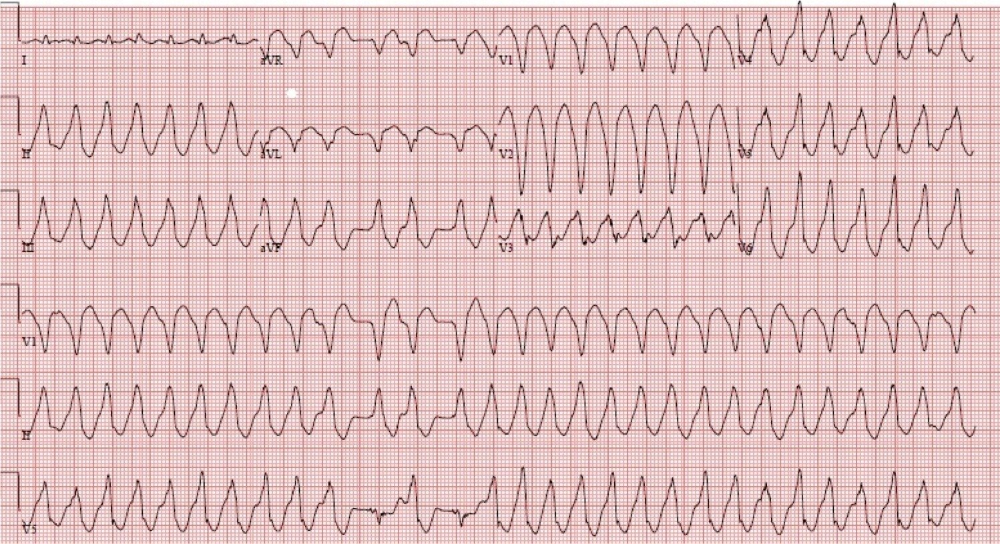
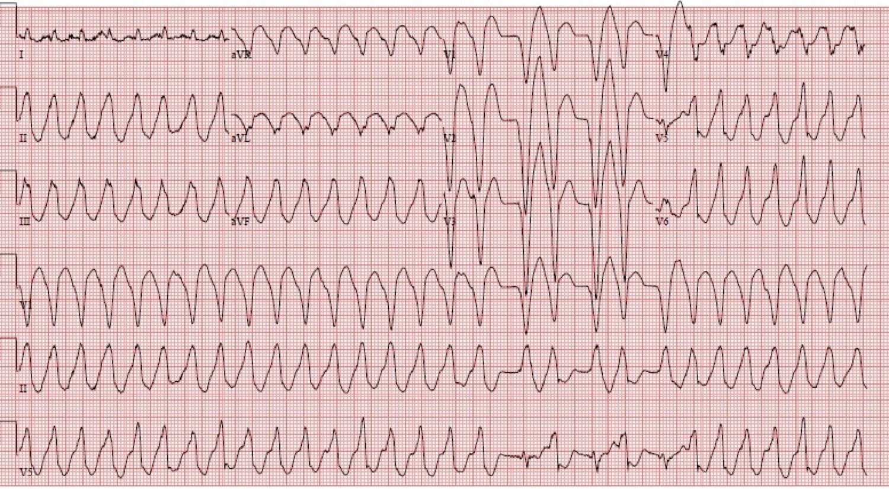

06/02/2015 — Ca bệnh tại khoa cấp cứu: VT đa dạng do catecholamine (CPVT)
Bản dịch tiếng Việt của bài "ED Case of Catecholaminergic Polymorphic Ventricular Tachycardia" – Dr. Smith’s ECG Blog. Giữ nguyên toàn bộ 2 hình ảnh của bản gốc.
Ca này do một độc giả cung cấp; có một số chi tiết bị thiếu, nhưng tôi tin rằng nó vẫn mang tính giáo dục.
Trình bày ca bệnh
Lần đến khoa cấp cứu (ED) thứ nhất
Một bệnh nhân nam 40 mấy tuổi khởi phát tiền ngất khi đang gắng sức mức độ vừa. Khi đến khoa cấp cứu, bệnh nhân tím tái và lơ mơ buồn ngủ. Monitor cho thấy nhịp nhanh QRS rộng (wide complex tachycardia). Sốc điện chuyển nhịp ở mức 120 J không có đáp ứng, nhưng sau đó bệnh nhân tự chuyển về nhịp xoang. Sau khi được tiêm một liều bolus amiodarone, bệnh nhân được nhập viện.
Khai thác thêm tiền sử cho thấy trước đây đã từng có một cơn VT đa dạng (Polymorphic VT), với chẩn đoán giả định là VT đa dạng do catecholamine (Catecholaminergic Polymorphic VT – CPVT) do bất thường thụ thể ryanodine.
Bệnh nhân đã được điều trị bằng nadolol và một máy khử rung tim cấy được tự động (AICD). Không có tiền sử gia đình liên quan. Ngoài ra bệnh nhân luôn khỏe mạnh, và luôn thích tập thể dục.
Trong thời gian gần đây hơn, bệnh nhân cũng đã bị máy cấy trong cơ thể phóng sốc một lần khi đang tập luyện. Khi kiểm tra AICD, hóa ra cú sốc là do nhịp nhanh xoang, vì vậy giới hạn tần số tim chấp nhận được đã được nâng từ 150 lần/phút lên 188 lần/phút.
Diễn biến tại bệnh viện thuận lợi. Bệnh nhân vẫn ổn định và được cho ra viện với flecainide, có lên kế hoạch làm nghiệm pháp gắng sức tái khám.
Trong kế hoạch điều trị có ghi: “Vùng điều trị của ICD sẽ không được hạ thấp vào lúc này vì lo ngại rằng các cú sốc của ICD ở người bị CPVT có thể gây ra đáp ứng adrenergic mạnh và khởi phát cơn bão VT.”
Lần đến khoa cấp cứu thứ hai
Bệnh nhân lại đến khoa cấp cứu 5 ngày sau:
Sau khi gắng sức mức độ vừa, bệnh nhân đến trong tình trạng suy kiệt cấp với tần số tim 180, nhưng số nhát bóp có tưới máu ít hơn.
Đây là các điện tâm đồ của bệnh nhân:


Bản ghi thứ hai, ngay sau bản ghi thứ nhất:


Diễn biến tại khoa cấp cứu
Bệnh nhân được sốc điện chuyển nhịp đồng bộ hai lần ở mức 120 và 200 J mà không có đáp ứng. Bệnh nhân vẫn duy trì nhịp nhanh QRS rộng với tần số tim trên monitor lên tới 180, nhưng số nhát bóp có tưới máu ít hơn. Bệnh nhân vẫn tỉnh táo.
Bệnh nhân được dùng metoprolol 15 mg tĩnh mạch mà không có đáp ứng. (Bình luận: Tôi cho rằng đây là một liều nhỏ, và tôi sẽ dùng esmolol vì thuốc tác dụng ngắn, có thể tăng liều dần và ngừng nếu có biến cố bất lợi).
Nhằm giảm cơn tăng vọt catecholamine được cho là đang thúc đẩy nhịp nhanh, bệnh nhân được đặt nội khí quản và an thần bằng propofol. Biện pháp này thất bại.
Đã thử tạo nhịp vượt tần số (overdrive pacing) qua máy tạo nhịp đã cấy, và biện pháp này cũng thất bại.
Sau đó nhịp được xử trí bằng amiodarone (thất bại).
Bệnh nhân được dùng esmolol (cũng thất bại).
Cuối cùng, bệnh nhân được dùng verapamil.
Sau verapamil, bệnh nhân tụt huyết áp nặng cho đến khi da xám ngắt và mất mạch. Ép tim được bắt đầu và bệnh nhân được khử rung lần nữa ở mức 200J, kết quả là khôi phục nhịp xoang 30-40 lần/phút, nhưng tưới máu không đầy đủ.
Đã dùng atropine và tạo nhịp. Bệnh nhân ổn định, và có thể được chuyển ra khỏi khoa cấp cứu.
Sau một tuần nằm viện, bệnh nhân được cho ra viện với amiodarone và nadolol sau một nghiệm pháp gắng sức không có gì bất thường. Flecainide được ngừng. Có cân nhắc việc cắt thần kinh giao cảm tim trong tương lai.
Nhịp nhanh thất đa dạng do catecholamine (Catecholaminergic Polymorphic Ventricular Tachycardia)
CPVT là một trong các loại VT xảy ra trên tim có cấu trúc bình thường. Bệnh do các đột biến hiếm gặp (di truyền hoặc tự phát) của gen thụ thể ryanodine hoặc gen calsequestrin 2. Cả hai đột biến này lại ảnh hưởng đến sự giải phóng calci thì tâm trương từ lưới cơ tương, và do đó làm tăng nồng độ calci nội bào (giống như digoxin), dẫn đến hậu khử cực muộn và hoạt động khởi kích. Cũng như với digoxin, một trong những rối loạn nhịp chính là nhịp nhanh hai chiều.
PMVT có đặc điểm là các cơn ngất từng đợt khi gắng sức nặng hoặc khi xúc động cấp ở những người không có bất thường cấu trúc tim. Bệnh gây ra VT đa dạng, thường kèm VT hai chiều, và có thể dung nạp tốt.
Như đã đề cập ở trên, một số trường hợp CPVT có liên quan đến đột biến ở thụ thể ryanodine của tim, còn gọi là kênh giải phóng calci của lưới cơ tương tim (kênh trung gian giải phóng calci từ lưới cơ tương, cần thiết cho sự co bóp cơ tim). Catecholamine có thể làm các kênh liên quan đến ryanodine này “rò rỉ” calci trong thì tâm trương và có thể khởi phát các rối loạn nhịp đe dọa tính mạng.
Bàn luận sâu hơn về cơ chế nằm ngoài phạm vi của blog này (và ngoài khả năng của tôi!)
Tuổi khởi phát trung bình là 7-12 tuổi, vì vậy ban đầu đây là một vấn đề của nhi khoa. Tuy nhiên, bệnh có thể khởi phát muộn tới 40 tuổi. Biểu hiện đầu tiên có thể là ngừng tim.
Điện tâm đồ nền bình thường. Có nhiều cơ chế tham gia, bao gồm vào lại và hậu khử cực muộn do quá tải calci hoặc do thay đổi trương lực thần kinh tự chủ. Nói chung không thể gây ra cơn trong phòng thăm dò điện sinh lý (EP).
VT có hình thái đa dạng hoặc hình thái hai chiều, như gặp trong ngộ độc digoxin hoặc ngộ độc aconite, với trục QRS luân phiên, hoặc LBBB/RBBB luân phiên.
Bàn luận thêm nằm ngoài phạm vi của blog này, ngoại trừ phần xử trí cấp cứu, và một chút về xử trí lâu dài.
XỬ TRÍ CẤP CỨU VT đa dạng do catecholamine
(tôi tìm được rất ít trong y văn; hướng dẫn của ACC/AHA về rối loạn nhịp có vẻ như chưa được cập nhật kể từ lần công bố gần nhất năm 2006):
Nếu đó là một trẻ em đến khám lần đầu, bạn có thể chỉ gặp một VT đa dạng không rõ căn nguyên. Nếu bạn ghi được điện tâm đồ khi đang nhịp xoang và thấy QT dài, thì bạn sẽ biết đó không phải PMVT. Nếu không có cơ hội ghi điện tâm đồ đó, bạn sẽ không biết, nhưng QT dài phổ biến hơn PMVT rất nhiều. Đến tuổi trưởng thành, bệnh nhân có lẽ đã biết về bệnh của mình. Điều này quan trọng, vì xử trí hai bệnh lý này rất khác nhau.
Nếu bạn ghi được một đoạn nhịp xoang:
1. Nếu có QT dài, thì VT đa dạng đó là xoắn đỉnh (Torsade).
2. Nếu điện tâm đồ có thiếu máu cục bộ hoặc bằng chứng bệnh cơ tim, thì đó là VT đa dạng do thiếu máu cục bộ hoặc do tim bất thường về cấu trúc.
Đây là một bài về xử trí VT đa dạng KHÔNG do CPVT.
3. Nếu QRST bình thường khi đang nhịp xoang, thì hãy nghĩ nhiều đến CPVT.
Hoặc có thể, như trong ca này, bệnh nhân đã được biết là có CPVT.
Sau đây là một số bước xử trí cần thực hiện:
1. Sốc điện chuyển nhịp hoặc khử rung (tùy theo có mạch hay không), nhưng dùng trước thuốc chẹn beta (nếu có thể), vì bản thân cú sốc điện có thể gây tăng vọt catecholamine, làm tình trạng thêm trầm trọng và khiến VT tái phát sớm.
2. Cần dùng thuốc chẹn beta đường tĩnh mạch. Esmolol là lựa chọn rất tốt, vì thuốc có thời gian bán thải rất ngắn và có thể ngừng nếu có biến chứng. Liều: Esmolol có thể tiêm bolus 500 mcg/kg (0,50 mg/kg), sau đó truyền liên tục 50 mcg/kg/phút (0,05 mg/kg/phút). Có thể tiêm bolus lại nhiều lần khi cần, mỗi lần tăng tốc độ truyền thêm 50 mcg/kg/phút.
3. Với VT tái phát khi không có QT kéo dài, cần dùng amiodarone tiêm bolus rồi truyền liên tục. Amiodarone có tác dụng chẹn beta.
4. Verapamil được khuyến cáo dựa trên các nghiên cứu cho thấy thuốc phòng ngừa PMVT do gắng sức (3, 4). Tuy nhiên, tôi chưa tìm thấy y văn nào về việc dùng thuốc trong tình huống cấp. Bác sĩ điện sinh lý của chúng tôi viết rằng anh ấy sẽ thử dùng. Trong ca này, thuốc có vẻ đã làm tình hình xấu đi, nhưng đó chính là vấn đề của các ca đơn lẻ không có nhóm chứng.
4. An thần, như trong ca này, để giảm kích thích giao cảm? Hoặc, khuyến cáo nhóm IIb trong hướng dẫn của ACC/AHA cho VT "dai dẳng liên tục" (incessant) là gây mê toàn thân.
Tránh isoproterenol và tạo nhịp vượt tần số. Với VT đa dạng do QT dài mắc phải (xoắn đỉnh – Torsade de Pointe), isoproterenol được chỉ định để tăng tần số xoang và ngăn xoắn đỉnh tái phát. Tuy nhiên, thuốc này làm CPVT nặng hơn. May mắn là xoắn đỉnh phổ biến hơn, nhưng nếu bạn biết bệnh nhân có CPVT, hãy tránh isoproterenol.
Tạo nhịp vượt tần số được dùng để ngăn tái phát PMVT phụ thuộc khoảng ngưng (xoắn đỉnh), vốn nặng lên khi nhịp chậm và cải thiện khi nhịp nhanh). Sinh lý bệnh của CPVT rất khác với hội chứng QT dài. CPVT, khác với xoắn đỉnh, lại nặng lên khi nhịp nhanh. Xem bài này về xử trí xoắn đỉnh.
XỬ TRÍ LÂU DÀI (đây là một vài biện pháp điều trị mà bác sĩ điện sinh lý có thể áp dụng)
1. Thuốc chẹn beta
2. Cân nhắc máy khử rung tim cấy được tự động (AICD), đặc biệt nếu bệnh nhân từng sống sót sau ngừng tim. Điều trị bằng ICD mà không dùng kèm thuốc chẹn beta
là nguy hiểm vì nguy cơ bão điện (electrical storm) khởi phát
do tăng vọt adrenergic liên quan đến cú sốc điện.
3. Flecainide nếu kháng trị với các biện pháp trên (thuốc ức chế thụ thể ryanodine của tim)
4. Thuốc verapamil
5. Tuyệt đối tránh thể thao thi đấu
6. Cắt bỏ thần kinh giao cảm tim (sympathetic denervation) nếu kháng trị với các biện pháp trên
Chỉ cần bỏ lỡ một liều thuốc chẹn beta cũng có thể dẫn đến biến cố tử vong hoặc suýt tử vong
Đoạn sau được chép từ hướng dẫn của ACC/AHA (trích nguyên văn):
Các rối loạn nhịp trên thất và thất thường được gây ra một cách lặp lại được bằng gắng sức khi tần số tim đạt ngưỡng 120 đến 130 nhịp/phút. PVC đơn lẻ thường xuất hiện trước, và ngay sau đó là các loạt ngắn nhịp nhanh thất không bền bỉ (NSVT). Nếu bệnh nhân tiếp tục gắng sức, thời gian các loạt VT tăng dần và VT có thể trở thành bền bỉ. Trục QRS luân phiên từng nhát, xoay 180°, gọi là “VT hai chiều”, là hình ảnh điển hình của các rối loạn nhịp liên quan đến CPVT. Bệnh nhân CPVT cũng có thể biểu hiện bằng VT đa dạng không đều hoặc rung thất (VF).
Thuốc chẹn beta ngăn ngừa ngất tái phát ở phần lớn bệnh nhân, ngay cả khi VT và SVT thường vẫn có thể gây ra được trong nghiệm pháp gắng sức. Nếu ngất xảy ra ở bệnh nhân đang dùng thuốc chẹn beta, khuyến cáo cấy ICD. Tuy nhiên, điều trị bằng ICD đòi hỏi lập trình thiết bị cẩn thận để tránh điều trị không cần thiết cho các cơn rối loạn nhịp nhanh thất không bền bỉ.
Tài liệu tham khảo:
Zipes DP và cs. ACC/AHA Guidelines for management of patients with ventricular arrhythmias and sudden cardiac death. Tạp chí JACC Vol. 48, No. 5, Sept. 2006:e247– e346
Pflaumer A. Davis AM. Guidelines for the diagnosis and management of
Catecholaminergic Polymorphic Ventricular
Tachycardia. Tạp chí Heart, Lung, and Circulation 2012:21(2):96-100.
Rosso R và cs. Calcium channel blockers and beta-blockers versus beta-blockers alone for preventing exercise-induced arrhythmias in catecholaminergic polymorphic ventricular tachycardia. Tạp chí Heart Rhythm 2007;4:1149–1154.
Swan H và cs. Calcium channel antagonism reduces exercise-induced ventricular arrhythmias in catecholaminergic polymorphic ventricular tachycardia patients with RyR2 mutations. Tạp chí J Cardiovasc Electrophysiol 2005;16:162–166. Bài báo này chỉ bàn về xử trí lâu dài, không bàn về xử trí cấp cứu.